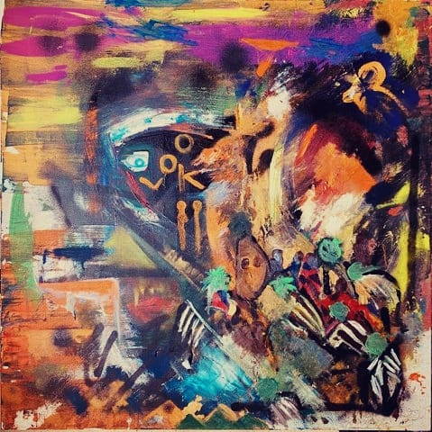
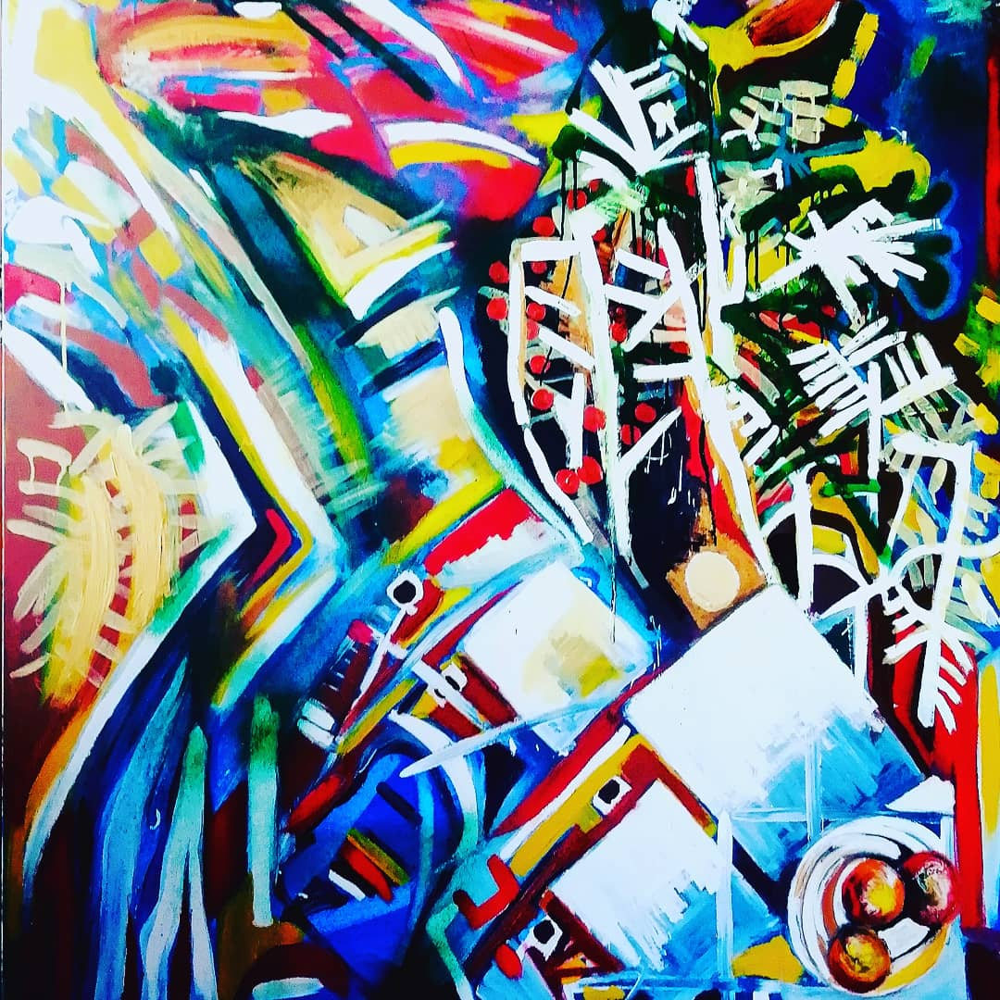
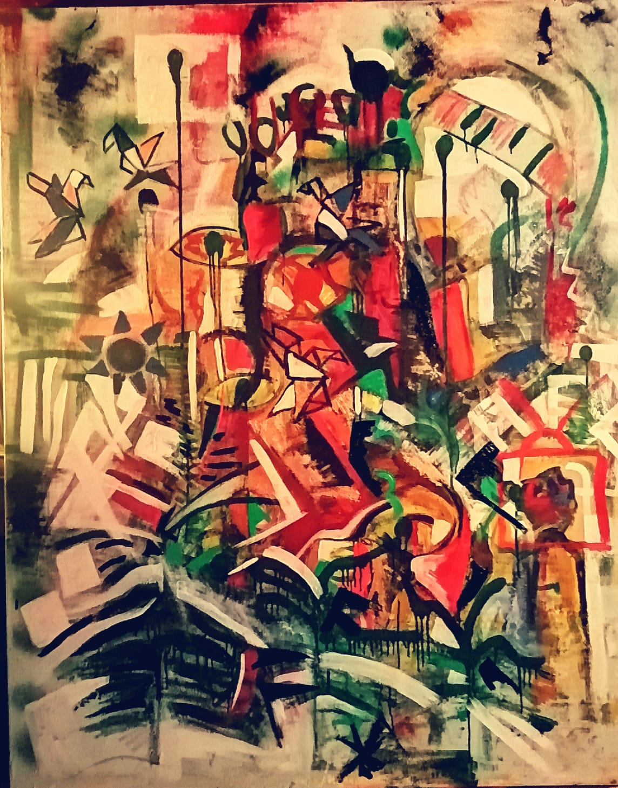
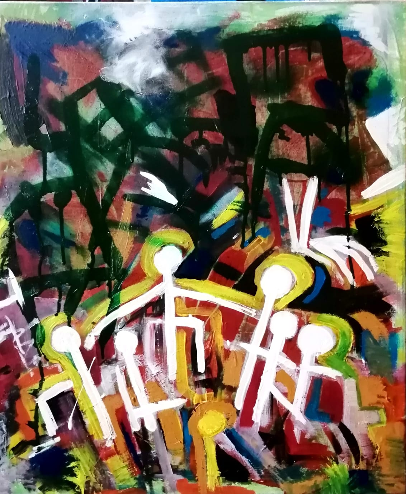
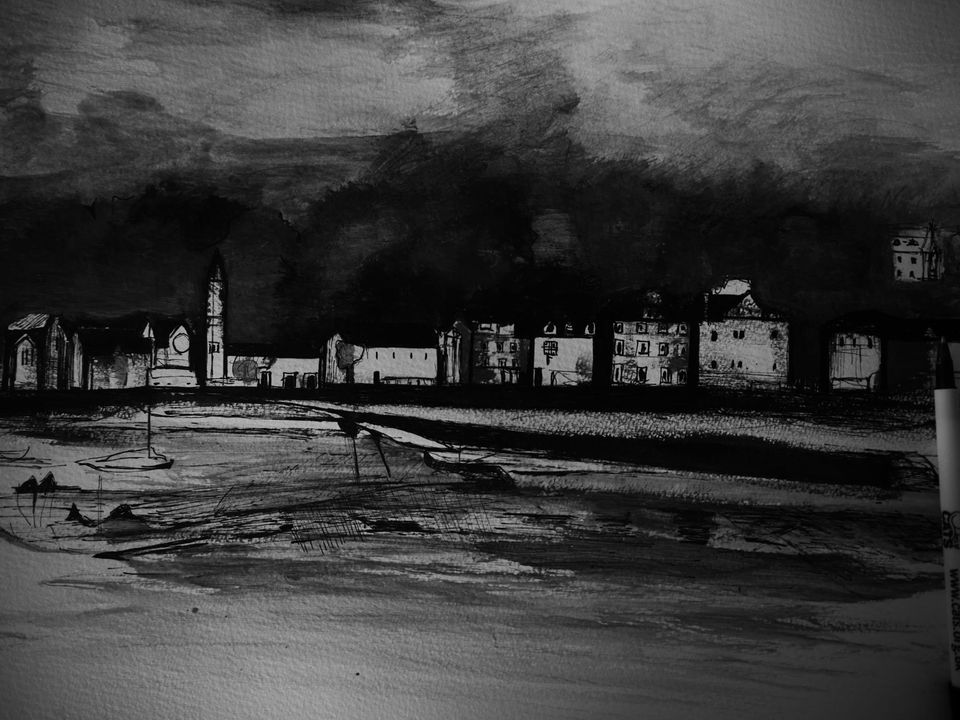
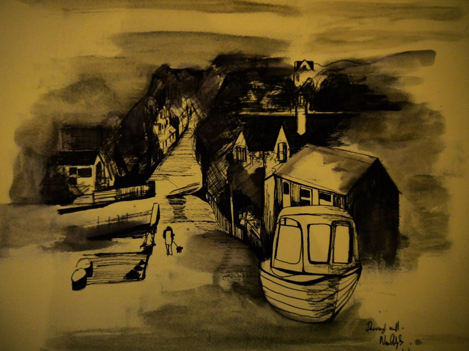
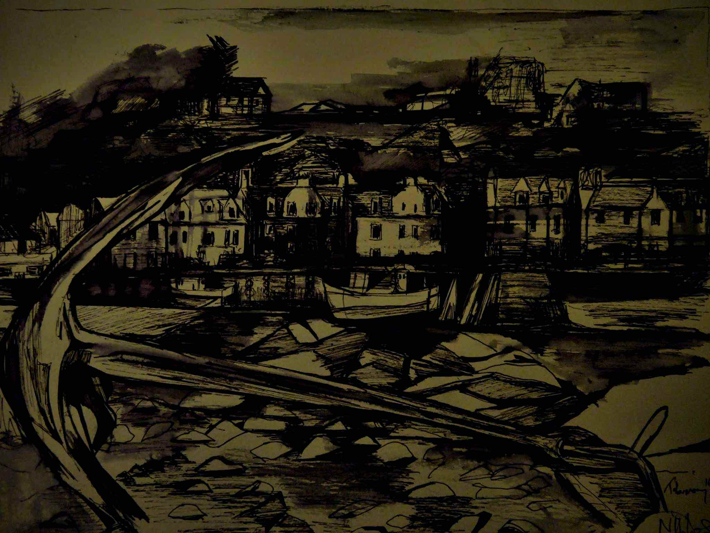
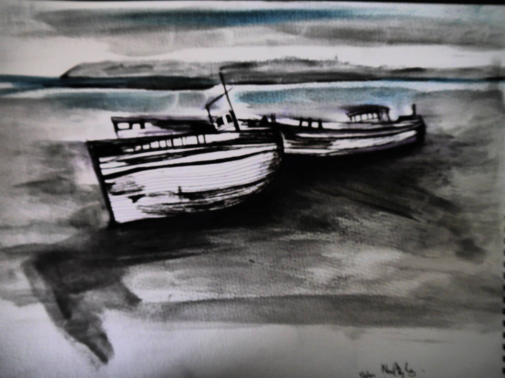

Neal Hughes is an Irish artist, singer, musician, songwriter and film-maker originally from Dungannon, Northern Ireland.
He previously worked as an Arts researcher at the BBC before returning to college to finish a BSC in Social Sciences in 2014 and went on to study an MA degree at the Irish World Academy of Music and Dance at the University of Limerick, graduating with a 2.1 in 2017.
Neal currently works as a Music Therapist based in Belfast.
PAINTINGS
   SKETCHES
   FILM
The Kiosk
This is Neal’s debut as a Director.
The Kiosk was mostly shot by Neal with help of his colleague Gavin McCauley who assisted in shooting time lapses and consultant on editing.
The film was shot over two summers and is a unique view of street life from a little kiosk in which Neal worked as a Barista.
MUSIC
- youtube
- soundcloud
- bandcamp
CONTACT